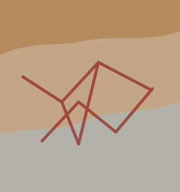

COMÉRCIO E
CIRCULAÇÃO DE
TECNOLOGIA NA ROMA ANTIGA
Descubra como Roma conectou povos, ideias e inovações, transformando o Mediterrâneo no maior centro de integração do mundo antigo.
EXPLORAR O IMPÉRIO
O Império Romano
Roma construiu uma das maiores redes comerciais da Antiguidade. Suas estradas, portos e rotas marítimas permitiam a circulação de alimentos, metais, tecidos, armas e conhecimento entre Europa, África e Ásia.
Além do comércio, os romanos desenvolveram grandes avanços tecnológicos, como aquedutos, estradas pavimentadas, concreto romano, pontes e sistemas de saneamento, influenciando a engenharia moderna.
A combinação entre comércio, tecnologia e organização política tornou Roma um dos maiores impérios da história.
-

COMÉRCIO
Mercadorias, moedas e mercados que movimentaram o Império Romano
SAIBA MAIS -

TECNOLOGIA
Inovações que facilitaram a vida e fortaleceram o Império
SAIBA MAIS -

ROTAS
Estradas, portos e caminhos que conectaram todo o Mediterrâneo
SAIBA MAIS